Seurat Curated Workflow
Irzam Sarfraz
Source:vignettes/articles/cnsl_seurat_curated_workflow.Rmd
cnsl_seurat_curated_workflow.RmdIntroduction
singleCellTK integrates functions from Seurat [1][2][3][4] package in an easy to use streamlined workflow using both the shiny user interface as well as the R console. The shiny application contains a separate tab that lets the users run the steps of the workflow in a sequential manner with ability to visualize through interactive plots from within the application. On the R console, the toolkit offers wrapper functions that use the SingleCellExperiment [5] object as the input and the output. All computations from the wrapper functions are stored within this object for further manipulation.
To view detailed instructions on how to use the workflow, please select ‘Interactive Analysis’ for using the workflow in shiny application or ‘Console Analysis’ for using these methods on R console from the tabs below:
Workflow Guide
In this tutorial example, we illustrate all the steps of the curated workflow and focus on the options available to manipulate and customize the steps of the workflow as per user requirements. To initiate the Seurat workflow, click on the ‘Curated Workflows’ from the top menu and select Seurat:
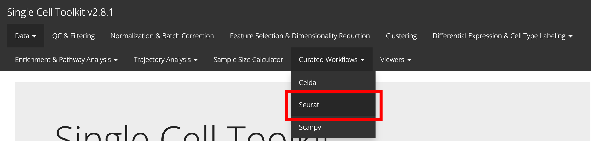
NOTE: This tutorial assumes that the data has already been uploaded via the upload tab of the toolkit and filtered before using the workflow.
1. Normalize Data
Assuming that the data has been uploaded via the Upload tab of the toolkit, the first step for the analysis of the data is the Normalization of data. For this purpose, any assay available in the uploaded data can be used against one of the three methods of normalization available through Seurat i.e. LogNormalize, CLR (Centered Log Ratio) or RC (Relative Counts).
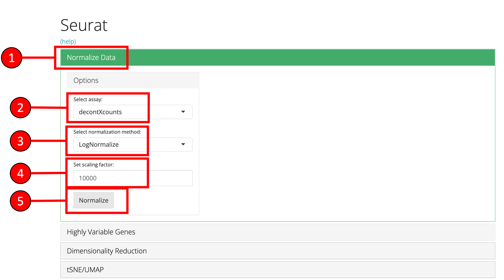
- Open up the ‘Normalize’ tab by clicking on it.
- Select the
assayto normalize from the dropdown menu. - Select the normalization method from the dropdown menu. Available methods are
LogNormalize,CLRorRC. - Set the scaling factor which represents the numeric value by which the data values are multiplied before log transformation. Default is set to
10000. - Press the ‘Normalize’ button to start the normalization process.
2. Scale Data
Once normalization is complete, data needs to be scaled and centered accordingly. Seurat uses linear (linear model), poisson (generalized linear model) or negbinom (generalized linear model) as a regression model.
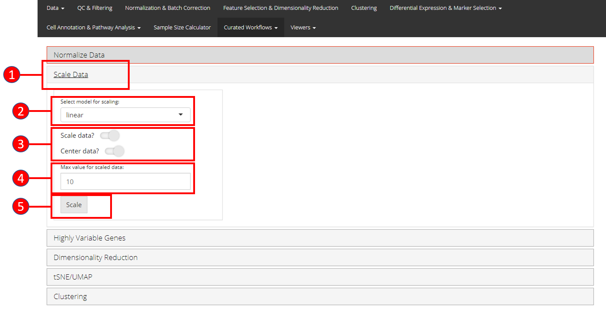
- Open up the ‘Scale Data’ tab.
- Select model for scaling from
linear,poissonornegbinom. - Select if you only want to scale data or center it as well.
- Input maximum scaled data value. This is the maximum value to which the data will be scaled to.
- Press ‘Scale’ button to start processing.
3. Highly Variable Genes
Identification of the highly variable genes is core to the Seurat workflow and these highly variable genes are used throughout the remaining workflow. Seurat provides three methods for variable genes identification i.e. vst (uses local polynomial regression to fit a relationship between log of variance and log of mean), mean.var.plot (uses mean and dispersion to divide features into bins) and dispersion (uses highest dispersion values only).
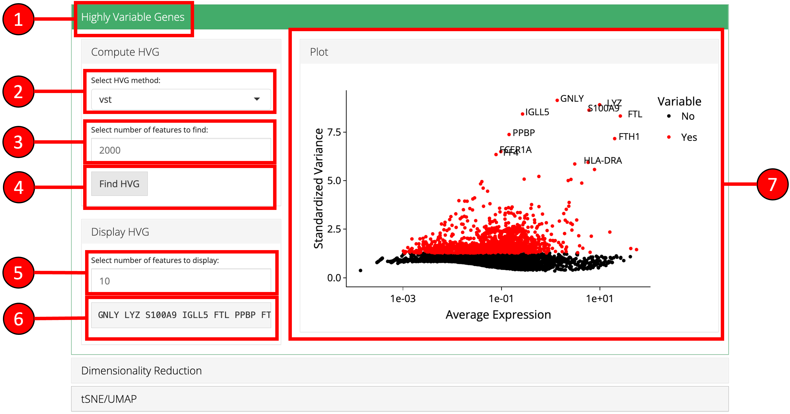
- Open up the ‘Highly Variable Genes’ tab.
- Select method for computation of highly variable genes from
vst,mean.var.plotanddispersion. - Input the number of genes that should be identified as variable. Default is
2000. - Press ‘Find HVG’ button to compute the variable genes.
- Once genes are computed, select number of the top most variable genes to display in (6).
- Displays the top most highly variable genes as selected in (5).
- Graph that plots each gene and its relationship based upon the selected model in (2), and identifies if a gene is highly variable or not.
4. Dimensionality Reduction Seurat workflow offers PCA or ICA for dimensionality reduction and the components from these methods can be used in the downstream analysis. Moreover, several plots are available for the user to inspect the output of the dimensionality reduction such as the standard ‘PCA Plot,’ ‘Elbow Plot,’ ‘Jackstraw Plot’ and ‘Heatmap Plot.’
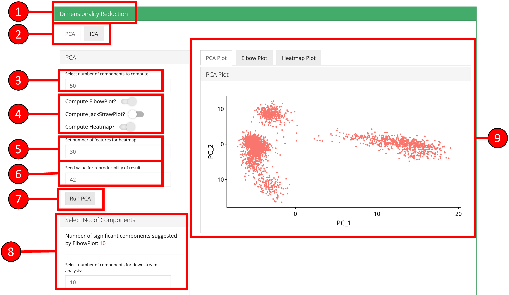
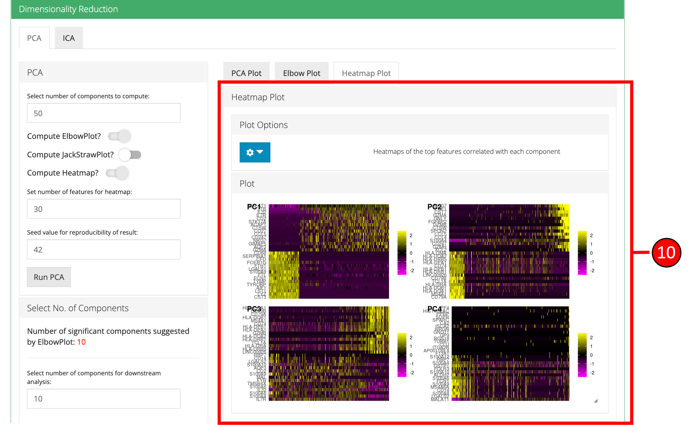
- Open up the ‘Dimensionality Reduction’ tab.
- Select a sub-tab for either ‘PCA’ or ‘ICA’ computation. Separate tabs are available for both methods if the user wishes to compute and inspect both separately.
- Input the number of components to compute. Default value is
50. - Select the plots that should be computed with the overall processing. The standard ‘PCA Plot’ will be computed at all times, while the remaining can be turned off if not required.
- Input the number of features against which a ‘Heatmap’ should be plotted. Only available when ‘Compute Heatmap’ is set to
TRUE. - Press the ‘Run PCA’ button to start processing.
- Select the number of computed components that should be used in the downstream analysis e.g. in ‘tSNE/UMAP’ computation or with ‘Clustering.’ If ‘Elbow Plot’ is computed, a suggested value will be indicated that should be preferred for downstream analysis.
- The plot area from where all computed plots can be viewed by the user.
- Heatmap plot has various options available for the users to customize the plot. Since a plot is computed against each component, a user-defined number of components can be selected against. Moreover, for viewing quality, a number of columns can be selected in which the plots should be shown.
5. tSNE/UMAP
‘tSNE’ and ‘UMAP’ can be computed and plotted once components are available from ‘Dimensionality Reduction’ tab.
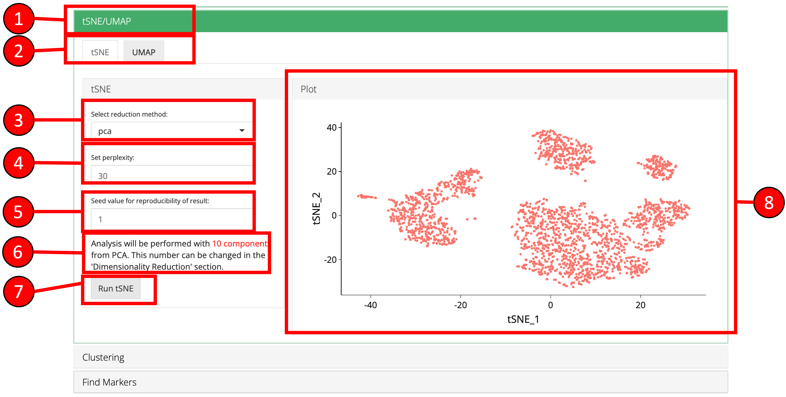
- Open up the ‘tSNE/UMAP’ tab.
- Select ‘tSNE’ or ‘UMAP’ sub-tab.
- Select a reduction method. Only methods that are computed previously in the ‘Dimensionality Reduction’ tab are available.
- Set perplexity tuning parameter.
- Information displayed to the user that how many components from the selected reduction method will be used. This value can only be changed from the ‘Dimensionality Reduction’ tab.
- Press ‘Run tSNE’ or ‘Run UMAP’ button to start processing.
- ‘tSNE’ or ‘UMAP’ plot depending upon the selected computation.
6. Clustering
Cluster labels can be generated for all cells/samples using one of the computed reduction method. Plots are automatically re-computed with cluster labels. The available algorithms for clustering as provided by Seurat include original Louvain algorithm, Louvain algorithm with multilevel refinement and SLM algorithm.
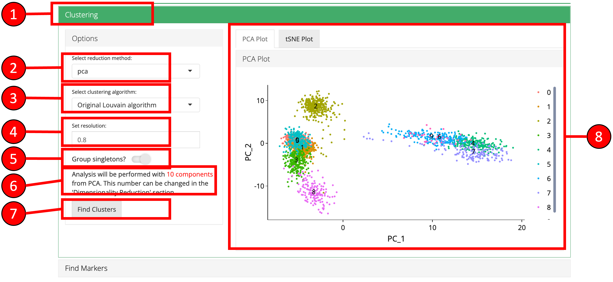
- Open up the ‘Clustering’ tab.
- Select a previously computed reduction method.
- Select clustering algorithm from
original Louvain algorithm,Louvain algorithm with multilevel refinementandSLM algorithm - Set resolution parameter value for the algorithm. Default is
0.8. - Set if singletons should be grouped to nearest clusters or not. Default is
TRUE. - Information displayed to the user that how many components from the selected reduction method will be used. This value can only be changed from the ‘Dimensionality Reduction’ tab.
- Press ‘Find Clusters’ button to start processing.
- Re-computed plots with cluster labels. Only those plots are available that have previously been computed.
7. Find Markers
‘Find Markers’ tab can be used to identify and visualize the marker genes using on of the provided visualization methods. The tab offers identification of markers between two selected phenotype groups or between all groups and can be decided at the time of the computation. Furthermore, markers that are conserved between two phenotype groups can also be identified. Visualizations such as Ridge Plot, Violin Plot, Feature Plot and Heatmap Plot can be used to visualize the individual marker genes.
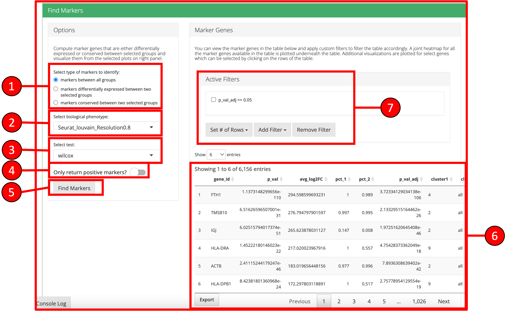
1. Select if you want to identify marker genes against all groups in a biological variable or between two pre-defined groups. Additionally, users can select the last option to identify the marker genes that are conserved between two groups. 2. Select phenotype variable that contains the grouping information. 3. Select test used for marker genes identification. 4. Select if only positive markers should be returned. 5. Press “Find Markers” button to run marker identification.
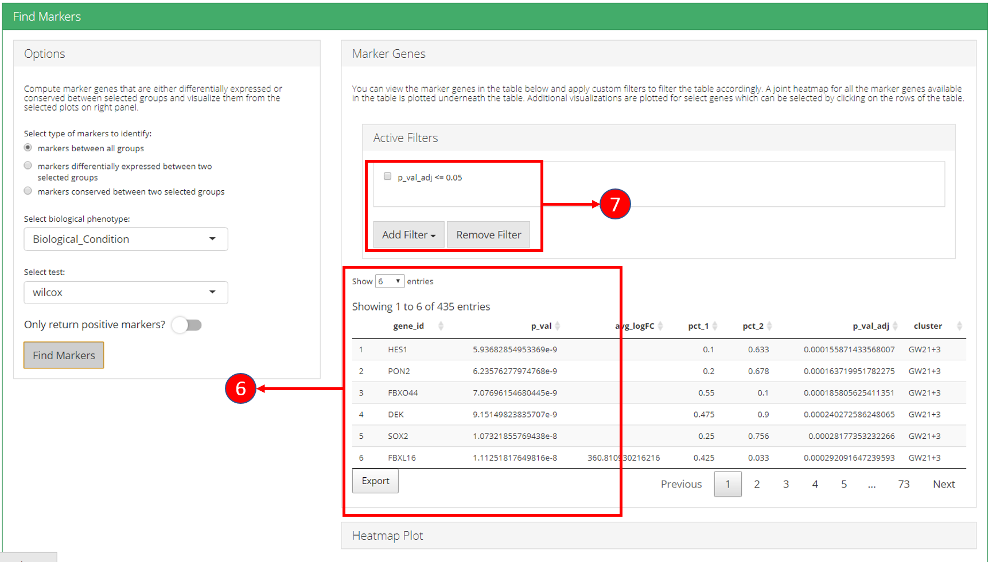
6. Identified marker genes are populated in the table. 7. Filters can be applied on the table.
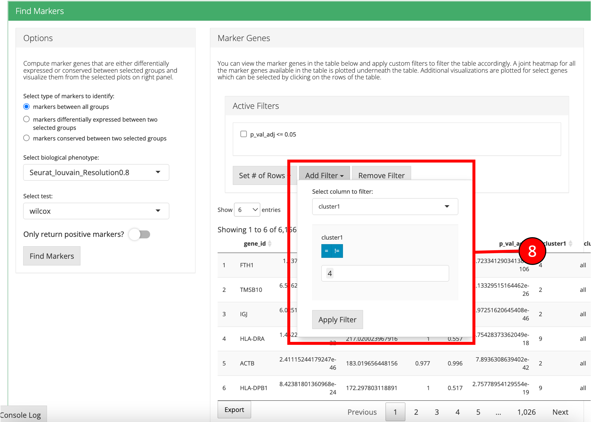
8. Filters allow different comparisons based on the type of the column of the table.
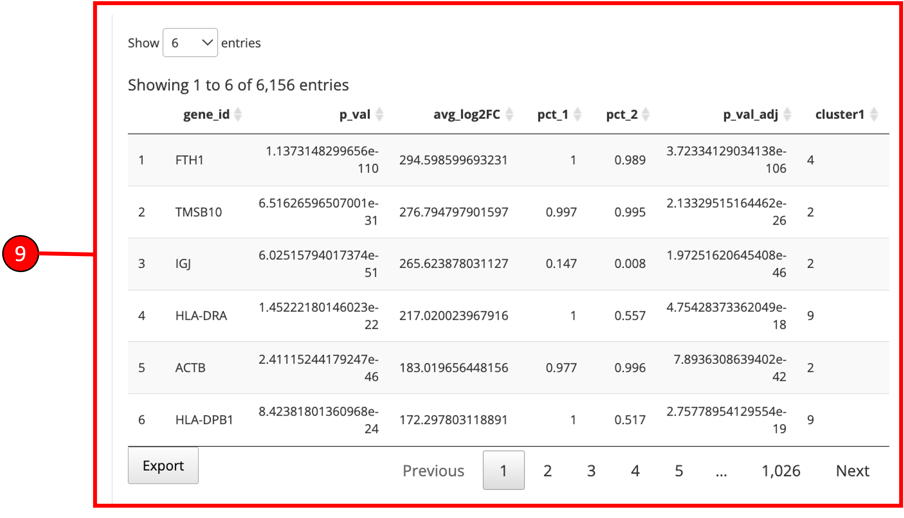
9. Table re-populated after applying filters. 10. Heatmap plot can be visualized for all genes populated in the table (9) against all biological groups in the selected phenotype variable.
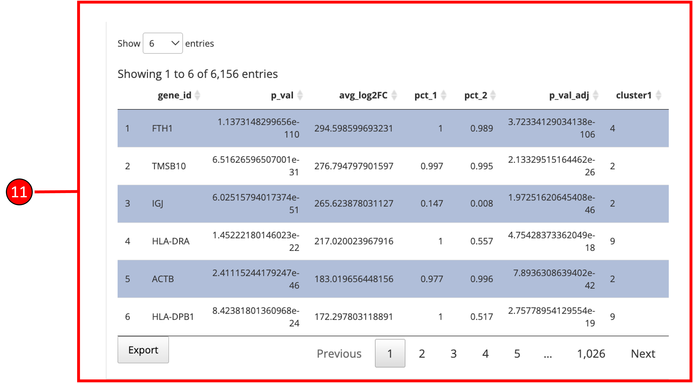
11. To visualize each individual marker gene through gene plots, they can be selected by clicking on the relevant rows of the table.
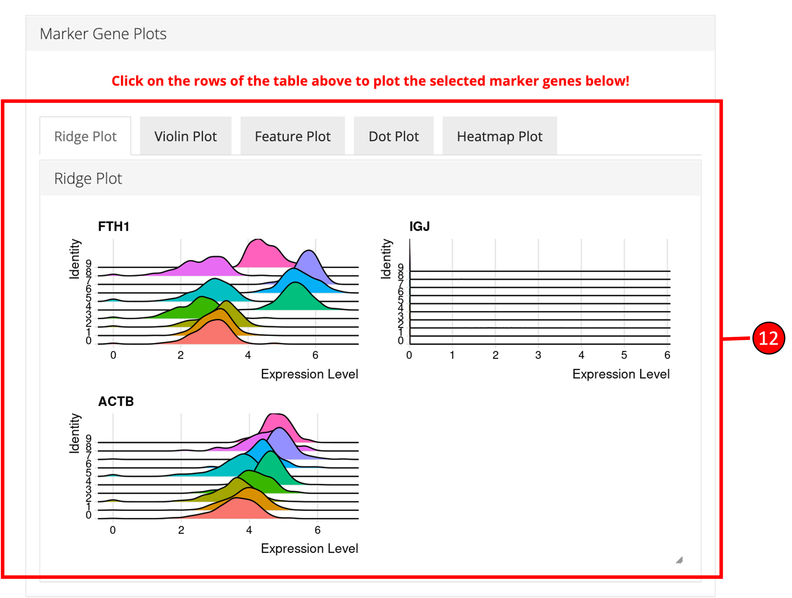
12. Selected marker genes from the table are plotted with gene plots.
8. Downstream Analysis
Once all steps of the Seurat workflow are completed, users can further analyze the data by directly going to the various downstream analysis options (Differential Expression, Marker Selection & Pathway Analysis) from within the Seurat workflow.
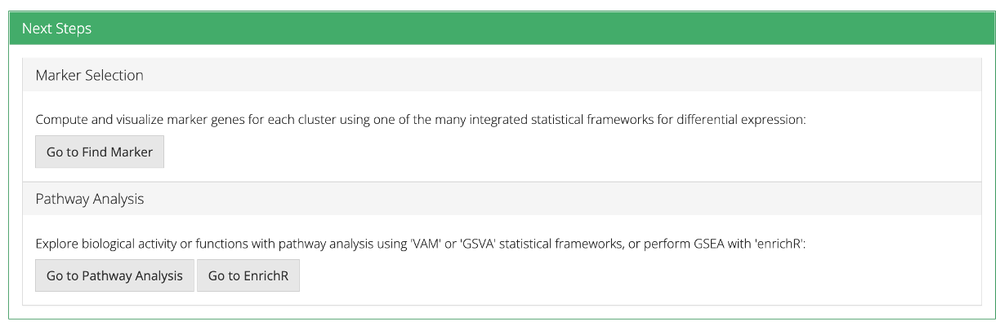
All methods provided by SCTK for Seurat workflow use a SingleCellExperiment object both as an input and output.
Using a sample dataset:
library(singleCellTK)
sce <- importExampleData('pbmc3k')
print(sce)## class: SingleCellExperiment
## dim: 32738 2700
## metadata(0):
## assays(1): counts
## rownames(32738): MIR1302-10 FAM138A ... AC002321.2 AC002321.1
## rowData names(3): ENSEMBL_ID Symbol_TENx Symbol
## colnames(2700): pbmc3k_AAACATACAACCAC-1 pbmc3k_AAACATTGAGCTAC-1 ...
## pbmc3k_TTTGCATGAGAGGC-1 pbmc3k_TTTGCATGCCTCAC-1
## colData names(12): Sample Barcode ... Date_published sample
## reducedDimNames(0):
## mainExpName: NULL
## altExpNames(0):1. Normalize Data
Once raw data is uploaded and stored in a SingleCellExperiment object, runSeuratNormalizeData() function can be used to normalize the data. The method returns a SingleCellExperiment object with normalized data stored as a new assay in the input object.
Parameters to this function include useAssay (specify the assay that should be normalized), normAssayName (specify the new name of the normalized assay, defaults to "seuratNormData"), normalizationMethod (specify the normalization method to use, defaults to "LogNormalize") and scaleFactor (defaults to 10000).
sce <- runSeuratNormalizeData(inSCE = sce, useAssay = "counts", normAssayName = "seuratNormData")2. Scale Data
Normalized data can be scaled by using the runSeuratScaleData() function that takes input a SingleCellExperiment object that has been normalized previously by the runSeuratNormalizeData() function. Scaled assay is stored back in the input object.
Parameters include useAssay (specify the name of normalized assay), scaledAssayName (specify the new name for scaled assay, defaults to "seuratScaledData"), model (specify the method to use, defaults to "linear"), scale (specify if the data should be scaled, defaults to TRUE), center (specify if the data should be centered, defaults to TRUE) and scaleMax (specify the maximum clipping value, defaults to 10).
sce <- runSeuratScaleData(inSCE = sce, useAssay = "seuratNormData", scaledAssayName = "seuratScaledData")3. Highly Variable Genes
Highly variable genes can be identified by first using the runSeuratFindHVG() function that computes that statistics against a selected HVG method in the rowData of input object. The genes can be identified by using the getTopHVG() function. The variable genes can be visualized using the plotSeuratHVG() method.
Parameters for runSeuratFindHVG() include useAssay (specify the name of the scaled assay, defaults to "seuratScaledData" but "counts" should be used with "vst" method) and hvgMethod() (specify the method to use for variable genes computation, defaults to "vst").
sce <- runSeuratFindHVG(inSCE = sce, useAssay = "counts", hvgMethod = "vst")
print(getTopHVG(inSCE = sce, method = "vst", n = 10))## [1] "PPBP" "LYZ" "S100A9" "IGLL5" "GNLY" "FTL" "PF4" "FTH1"
## [9] "GNG11" "FCER1A"
plotSeuratHVG(sce, labelPoints = 10)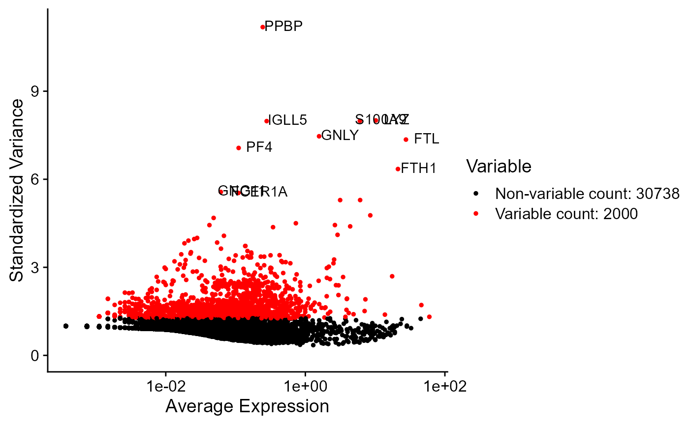
4. Dimensionality Reduction
PCA or ICA can be computed using the runSeuratPCA() and runSeuratICA() functions respectively. Plots can be visualized using plotSeuratReduction(), plotSeuratElbow(), plotSeuratJackStraw() (must previously be computed by runSeuratJackStraw()) and runSeuratHeatmap().
sce <- runSeuratPCA(inSCE = sce, useAssay = "seuratScaledData", reducedDimName = "seuratPCA", nPCs = 20)
plotSeuratReduction(inSCE = sce, useReduction = "pca")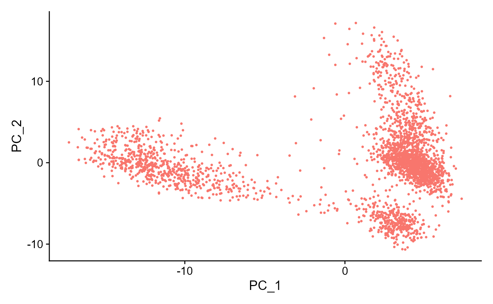
plotSeuratElbow(inSCE = sce)
sce <- runSeuratJackStraw(inSCE = sce, useAssay = "seuratScaledData", dims = 20)
plotSeuratJackStraw(inSCE = sce, dims = 20)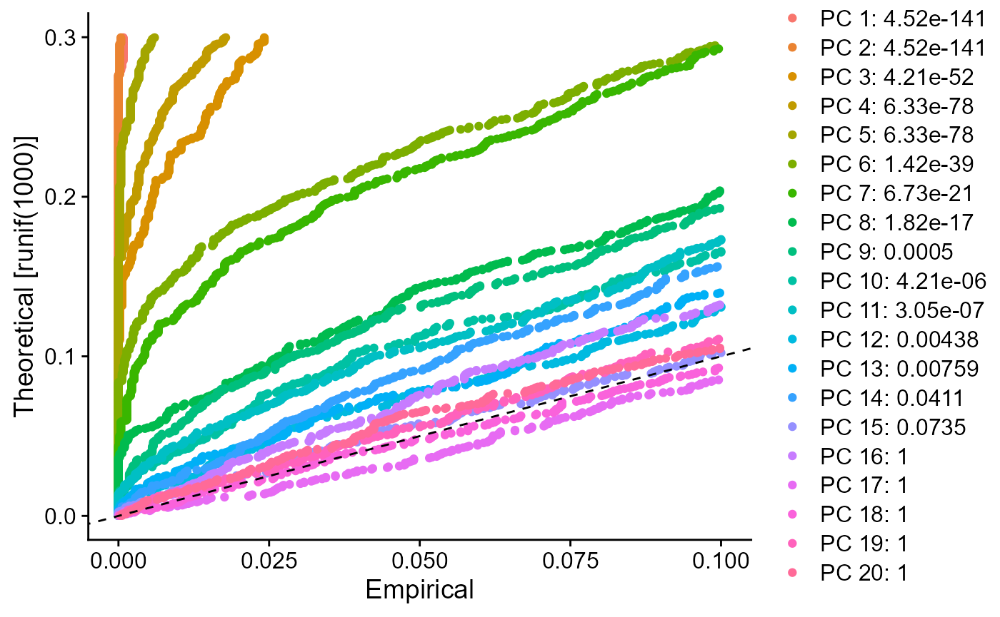
runSeuratHeatmap(inSCE = sce, useAssay = "seuratScaledData", useReduction = "pca", nfeatures = 20, dims = 2)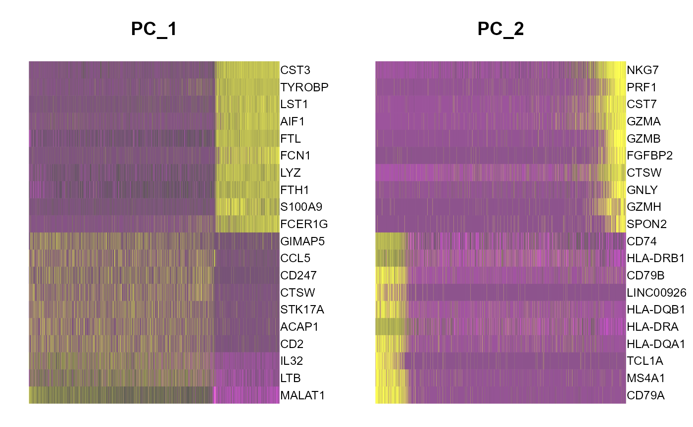
5. tSNE/UMAP runSeuratTSNE() and runSeuratUMAP() can be used to compute tSNE/UMAP statistics and store into the input object. Parameters to both functions include inSCE (input SCE object), useReduction (specify the reduction to use i.e. "pca" or "ica"), reducedDimName (name of this new reduction) and dims (number of dims to use). plotSeuratReduction() can be used to visualize the results.
sce <- runSeuratTSNE(inSCE = sce, useReduction = "pca", reducedDimName = "seuratTSNE", dims = 10)
plotSeuratReduction(sce, "tsne")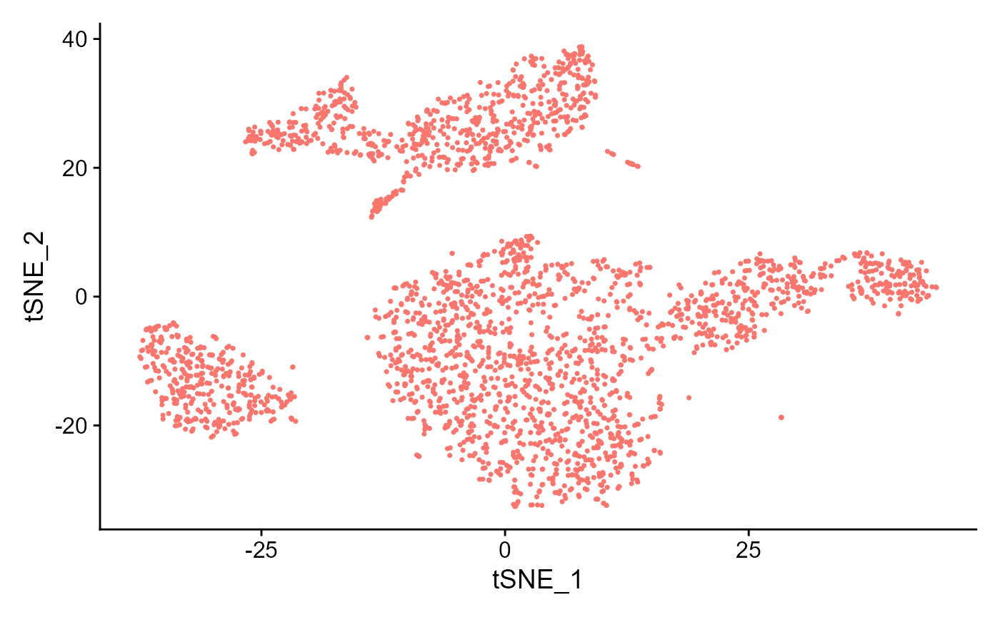
sce <- runSeuratUMAP(inSCE = sce, useReduction = "pca", reducedDimName = "seuratUMAP", dims = 10)
plotSeuratReduction(sce, "umap")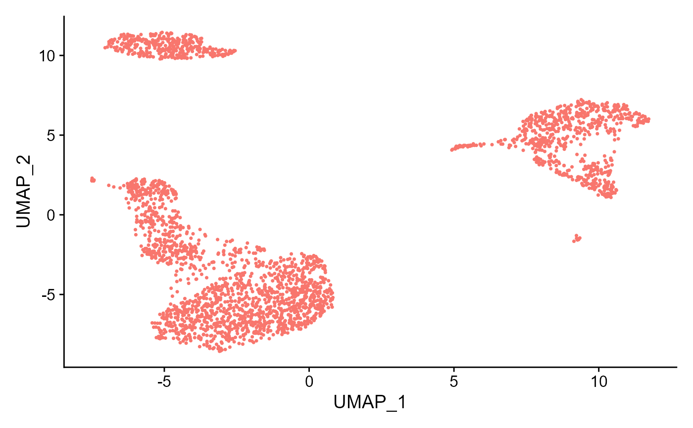
6. Clustering runSeuratFindClusters() function can be used to compute the clusters, which can later be plotted through the plotSeuratReduction() method with cluster labels. The parameters to the function include inSCE (input SCE object), useAssay (name of the scaled assay), useReduction (specify which reduction to use i.e. "pca" or "ica"), dims (number of dims to use) and the algorithm (either "louvain", "multilevel" or "SLM").
sce <- runSeuratFindClusters(inSCE = sce, useAssay = "seuratScaledData", useReduction = "pca", dims = 10, algorithm = "louvain")## Modularity Optimizer version 1.3.0 by Ludo Waltman and Nees Jan van Eck
##
## Number of nodes: 2700
## Number of edges: 98199
##
## Running Louvain algorithm...
## Maximum modularity in 10 random starts: 0.8285
## Number of communities: 11
## Elapsed time: 0 secondsplotSeuratReduction() can then be used to plot all reductions previously computed with cluster labels:
plotSeuratReduction(sce, "pca", showLegend = TRUE)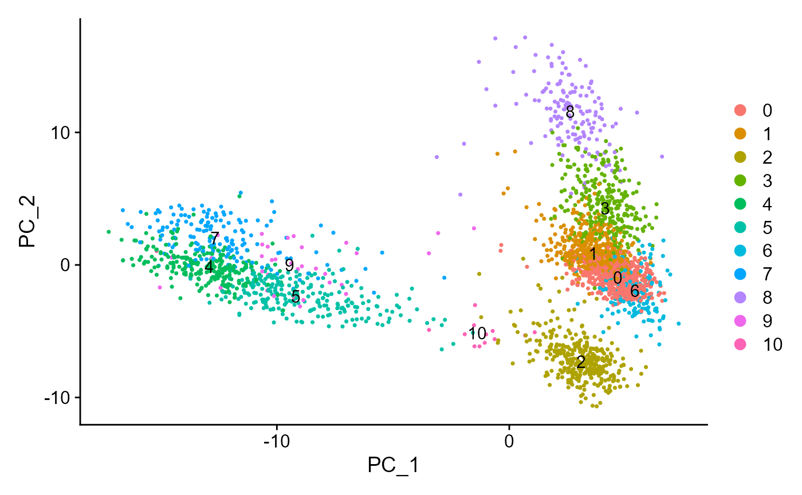
plotSeuratReduction(sce, "tsne", showLegend = TRUE)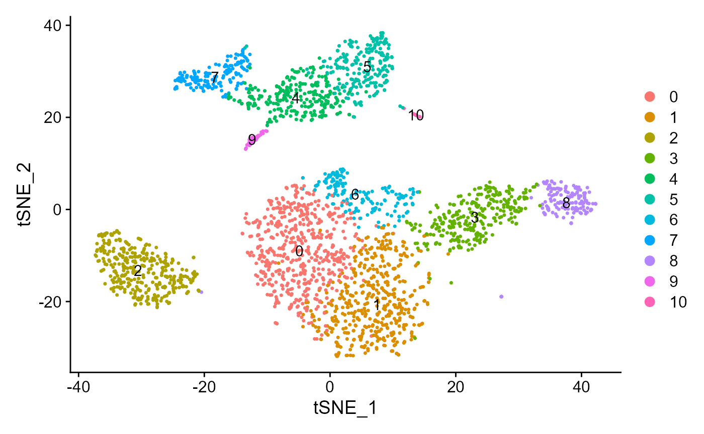
plotSeuratReduction(sce, "umap", showLegend = TRUE)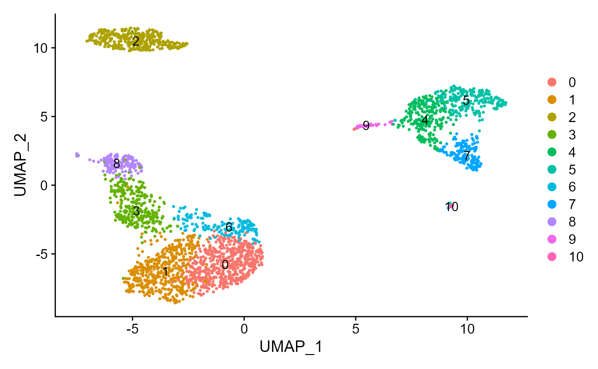
7. Find Markers
Marker genes can be identified using the runSeuratFindMarkers() function. This function can either use one specified column from colData of the input object as a group variable if all groups from that variable are to be used (allGroup parameter) or users can manually specify the cells included in one group vs cells included in the second group (cells1 and cells2 parameter).
sce <- runSeuratFindMarkers(inSCE = sce, allGroup = "Seurat_louvain_Resolution0.8")
print(head(metadata(sce)[["seuratMarkers"]]))## gene.id p_val avg_log2FC pct.1 pct.2 p_val_adj cluster1 cluster2
## 1 RPS27 7.886983e-113 -3.8080543 1.000 0.992 2.582041e-108 0 all
## 2 LDHB 3.508604e-102 -58.2224134 0.958 0.597 1.148647e-97 0 all
## 3 RPS25 5.117360e-95 0.7785624 1.000 0.974 1.675321e-90 0 all
## 4 RPS12 5.953365e-92 39.4769041 1.000 0.991 1.949013e-87 0 all
## 5 RPL31 7.054459e-92 -2.4053591 0.996 0.965 2.309489e-87 0 all
## 6 CCR7 4.031406e-90 1.1189456 0.491 0.118 1.319802e-85 0 allThe marker genes identified can be visualized through one of the available plots from ridge plot, violin plot, feature plot, dot plot and heatmap plot. All marker genes visualizations can be plotted through the wrapper function plotSeuratGenes(), which must be supplied the SCE object (markers previously computed), name of the scaled assay, type of the plot (available options are "ridge", "feature", "violin", "dot" and "heatmap"), features that should be plotted (character vector) and the grouping variable that is available in the colData slot of the input object. An additional parameter ncol decides in how many columns should the visualizations be plotted.
plotSeuratGenes(inSCE = sce, scaledAssayName = "seuratScaledData", plotType = "ridge", features = metadata(sce)[["seuratMarkers"]]$gene.id[1:4], groupVariable = "Seurat_louvain_Resolution0.8", ncol = 2, combine = TRUE)